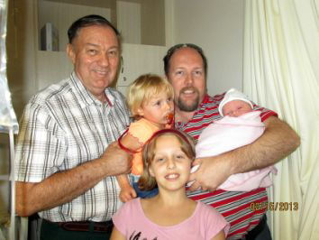

Gert Frans Henning *April 1785 was die sewende kind van die stamvader, Pieter Hendrik Henning. Hy en sy jongste broer, Daniël Stephanus het tot die dood van hulle vader in 1823 elkeen op 'n gedeelte van die familieplaas, Elands-kraal in die distrik van Graaff-Reinet geboer. Soos die geskiedenis leer, loop die weer ook maar in siklusse en 'n plaasboer is totaal en al afhanklik van goeie weer om te oorleef. Daar is altyd 'n aantal vrugbare jare met goeie reënval. Dit word opgevolg deur 'n paar swak jare met swak reënval. Vanaf ongeveer 1821 het 'n groot droogte in die Oos-Kaap (Graaff-Reinet distrik) begin toeslaan - tot so 'n mate dat Gert Frans skynbaar teen ongeveer 1824 ook maar besluit het om ander weivelde te gaan soek. Ons tel sy spoor op in die 1825 belastingopgawes, waar aangedui word dat hy en sy gesin op 'n plaas met die naam De Keur, in die Brakrivier wyk woon. Hierdie plaas lê ongeveer 43 kilometers Oos-Suid-Oos van Middelburg. Op die pad tussen Middelburg en Steynsburg draai mens regs by die Schoombie treinhalte. Mens moet ook onthou dat hierdie gebied in daardie dae nog buite die grense van die Kolonie was.
Sy eggenote ontval hom gedurende 1827, skynbaar met of kort na die geboorte van hulle vyfde kind, Gert Frans. Hy sit dus met vyf kinders, waarvan die jongste 'n pasgebore baba was - ver van die "beskawing" - en hy en sy kinders moet oorleef!
Op een van die buurplase, Vreesfontein, het 'n Olivier gesin gewoon ... en hulle het 'n vyftienjarige jong dogter, Gerbreg Leviena. In 1828 vra Gert Frans as 'n 43-jarige man hierdie dogter, wat nou 16 is, om met hom te trou. Sy eie oudste seun was 'n jaar ouer as Gerbreg. Mens sal dink dat so 'n huwelik nie kon uitwerk nie, maar hulle was uiteindelik 45 jaar lank getroud en het saam 10 kinders gehad.
Vanaf 1834 begin 'n droogte weer toeslaan in hierdie geweste en mens kan aflei dat die Henning gesin maar swaar gekry het, want teen 1838, toe dinge krisis afmetings begin aanneem het besluit Gert Frans om weer te trek - op soek na nuwe weivelde. Hy het wel vir 'n rukkie 'n draai gemaak by Norvalspont, maar uiteindelik op sy finale standplaas gaan vestig, nl die plaas Damfontein in die Kramberge - deesdae in die Aliwal-Noord distrik, waar hy en sy nasate vir meer as 100 jaar lank gewoon het. Ironies genoeg, dui die weerkaarte van daardie jare aan dat dit in 1839 baie goed begin reën het.
Maar om terug te keer na De Keur. Een van ons familiebondlede, Piet (of Pieter Emile b7.c2.d3.e5.f2.g3.) Henning van Randburg het gedurende November 2012 besluit om so veel as moontlik van hierdie ou Henning plase in die Oos-Kaap te gaan opsoek. So kom hy ook by De Keur uit. Die plaas bestaan vandag nog en is die eiendom van Fred en Rosemarie Jordaan. Volgens Fred dui die titelakte van die plaas aan dat Gert Frans Henning nie die plaas in 1838 verkoop nie, maar sommer net laat lê het, toe hy weg getrek het. Mens doen sekerlik sulke dinge as jy desperaat word om te oorleef en die weer speel nie saam nie.

Henning Boer in Zimbabwe al sy grond kwyt
Enkele dae voor Kersfees 2012 moes 'n Suid-Afrikaanse boer (b1.c6.d14.e2.f4. Pieter Bernhard Henning), wat sedert 1965 grond in Zimbabwe besit het, hoor hy het alles in dié land verloor.
Dit kom nadat 'n Zimbabwiese hof hom daaraan skuldig bevind het dat hy "staatsgrond" beset. Die betrokke grond is sy eie plaas in die suidooste van die land, in die omgewing van Chiredzi.
Op die koop toe moes Piet Henning (72) van Makhado 'n boete van $pound;100 (Amerikaans - sowat R850) betaal voordat hy die hofgebou kon verlaat. Hy moet so gou moontlik al sy besittings op die werf, in die opstal en skure verwyder. Voorheen is van sy landboutoerusting ook al gekonfiskeer. Die grootste deel van sy plaas van 81 ha is reeds in 2003 gekonfiskeer, "met oes en al", het hy voor die hofsaak aan Rapport gesê. Piet en sy seun, Greig, was jare lank vooruitstrewende boere op drie plase. Een hiervan is ook sedertdien heeltemal verwoes.
"Ek het nou niks meer in Zimbabwe oor nie," het hy gesê. "Dit gaan maar oor net een saak - as jy wit is, mag jy nie grond in Zimbabwe besit nie. "Om te appelleer is duur en moeilik. Ek aanvaar alles van my in Zimbabwe is nou weg. Dalk kom daar eendag 'n bietjie vergoeding."

Kmdt L.A.F Henning
Sedert Olivier Henning in 1980 met sy navorsing na die Henning families van Suid-Afrika begin het, het hy in sy agterkop gehad dat hy moes uitvind wie die Henning vlieënier was wat in 1971 saam met verskeie ander lugmag lede in drie vliegtuie teen Tafelberg vasgevlieg het. Hy het wel met verloop van tyd vasgestel dat dit b1.c6.d12.e3.f2. Lourens Adriaan Francois Henning *17-8-1930 was. Hy kon mettertyd die name van Lourens se vrou en vyf kinders bekom, maar niks verder nie. Almal van hulle het soos groot spelde verdwyn.
Twee jaar terug, gedurende 2011, veertig jaar na die ongeluk, het ons in Nuusbrief 105 van Februarie 2011 gevra of daar dalk enige van ons lede is wat enigiets van hierdie familie weet. Ons wou graag hierdie tragiese ongeluk in herinnering roep. Ons het geen reaksie gekry nie. Teen die einde van 2012 kry ons egter 'n E-Pos van 'n Martin Viljoen. Sy brief volg hier onder:
"I came across your website while I was searching the web for information on the family of the late Cmdt. L.A.F. Henning. Up until his tragic death, Cmdt. Henning and my father had been very close friends. My father, Brijan Alwyn Viljoen, is now 83 years old and living in Fish Hoek. They served together in the SAAF in Pretoria sometime between 1963 and 1968. I was very young at the time, but have very fond memories of the Henning family. I was also most privileged to have been taken up for a flight in the State President's Viscount, flown by Cmdt. Henning. I was sitting on my father's lap, who often jokes about me having fallen asleep shortly after we took off, and only woke up when the plane touched down again on the runway! I can remember the day of the tragedy clearly. We were living in Greytown, Natal, at the time. My father was devestated at receiving the news. I don't think he has ever quite come to terms with the tragic loss of his very dear friend. They say that time is a great healer, but I know that a part of my father died that fateful day.
Unfortunately my father lost complete contact with Rhona and the children over the years, and he too has often wondered whatever may have happened to the family. I read that you were also appealing for some information on the family (your newsletter no. 105/2011 refers.) Unfortunately I have no idea as to the current whereabouts of any of the family, and I too would greatly appreciate receiving any information that you may have received in response to your appeal. All I am able to offer you is a copy of a family photograph that I found amongst my father's personal treasures. Judging from the age of their youngest son, Jan Steyl, it would appear that the photograph must have been taken sometime either late 1969 or early in 1970. The only other small piece of information that I have managed to unearth is a reference to the South African Government Gazettes numbers 18937 dd 05 June 1998 and 19146 dd 21 August 1998 wherein they unfortunately make reference to the deceased estate of a Jan Steyl Henning. I have only come across this information very recently, and have been unable to obtain copies of the said Gazettes in order to confirm a date of birth in order to confirm whether or not the Jan Steyl is the one and the same person. This information could possibly provide some clues in the search for the remaining family members. I shall continue searching, and shall certainly let you know if I find any more useful information. Likewise, I would greatly appreciate receiving any further news that you may be able to unearth."
Ons is verheug oor die foto en sal ook die sterfte van Lourens se jongste seun, Jan Steyl opvolg. Tot op hede kon ons niks verder van die oudste seun, Lourens opspoor nie. Ons aanvaar dat al drie dogters getroud is en deesdae ander vanne het.

Ons Eerste Argentynse Henning Lid
Ons weet dat vier Henning gesinne in 1905 na Argentinië emigreer het. In Argentinië het hulle getalle sterk aangewas, maar teen 1938 het die meerderheid Henning's na Suid-Afrika teruggekeer. Ons was bewus van enkele gesinne en individue wat in Argentinië agtergebly het.
Piet (PH) Henning van Strand wat in die bestuurskomitee van die familiebond dien se pa, b6.c1.d3.e5.f3.g4. Juan Enrique (Jan Hendrik) Henning *17-4-1917 was een van diegene wat nie in 1938 na Suid-Afrika kon terugkeer nie, omdat hy destyds met sy militêre diensplig besig was. Hy het wel later teruggekom, maar sy oudste dogter, b6.c1.d3.e5.f3.g4.h1. Angela Elena (noemnaam Lita) *12-8-1941 en haar ma het in Argentinië agtergebly.
Piet het besluit dat Lita se Afrikaans nog goed genoeg is om as lid van die Familiebond ingeskryf te word. Hieronder volg 'n brief wat ons onlangs van Lita ontvang het. Ons publiseer dit presies soos sy dit geskryf het.
Hola, familie en beste wense vir 2013 ek is baie baie bly om nuus van julle te kry en soo goeie nuus! Baie baie dankie en ook vir die familieblad.
Hier gaan van die antwoorde:
Naam: Angela Elena Henning
My ouma en oupa (van ma se kant) Engeleen Watson en Andries Albertus Treurnicht.
Ek is gebore in Comodoro Rivadavia die 12 agustus 1941.
Ek was getroud in 1962 en is geskei in 1965, met Francesco Luzzi (liewers nie praat nie, hy was 'n pes... ) in Córdoba.
Ek het een seun José Franco Luzzi hy is gebore 26 November 1962, en van 1987 woon hy in Eunápolis (Bahia, Brasil). Die stad is 65 km. van Porto Seguro af langs die see. Dis soo 16 uur noord van Rio af met bus. Hy is klavier concertista vernaamlik in klasiek musiek, maar in Brasil werk hy met alle soort musiek. Sy adres is pine_jfl@hotmail.com. Hy is ook in facebook.
Ek het 35 jaar in tourisme gewerk, en is licenciada en turismo (ek weet nie hoe is dit in afrikans nie.) Nou is ek al 10 jaar gepensioen, en is nooit weer getroud nie, en woon alleen met 3 katte! hahaha.
Gesina en Thys kan jou vertel, hulle het laas jaar kom kuier, en ek kyk uit vir nog familie om te kom!
Ek het op my ouma en oupa se plaas groot geword en toe ek 8 jaar oud was het ons gaan woon in Comodoro vir skool.
Daarnae was ek 'n paar maande saam met hulle, want die plaas het hulle verkoop, en getrek na Trelew. Toe trek my ma hulle na Uspallata (Mendoza), daar het ons lank gewoon in die cordillera, die winter is vrek kowd en moes hout vuur maak want daar was nie gas of elektrisieteit nie. En van january 1958 getrek na Córdoba, waar ek nog altyd bly (my ma is is 2007 oorlede na lang siekte).
Nou ja as daar enigiets kort se my net.
En vertel my van jou familie? Baie baie groete van Lita XXXXXXXXXXXXXXXXXXX muchos besos
Vir iemand wat nooit in Suider Afrika gewoon het of Afrikaans op skool geleer het nie, is Lita se Afrikaans verbasend goed. Ons hoop dat sy ons nuusbriewe interessant sal vind en dat sy veel vreugde daaruit sal ervaar.

Henning Kasteel, Karnin, Duitsland
Sedert die Henning familie van Karnin, in Mecklenburg, Vorpommern, Duitsland in 1945 van hulle plaas verdryf is, is die plaashuis (kasteel) as 'n streekshoofkwartier deur die besettingsmagte van Rusland gebruik. Mettertyd het dit die streekskantore vir hierdie Oos Duitse streek geword. Met die samesmelting van die twee Duitslande in die 1990's is die gebou ontruim en nie langer in stand gehou nie. Dit het dus baie vervalle begin raak, maar is uiteindelik verkoop. Onlangs het ons 'n brief ontvang van Regina Mayerhoffer, die huidige eienaar van die kasteel:
We are owner since 10 years of Schloss Karnin in Mecklenburg Vorpommern. Is there a relationship to you? We intend to sell the Building, would be happy to learn more about the history. One of the buy interessents told us about a part of the family living in South Africa. We would be happy to hear more!
mit freundlichen Grüßen!
Regina Mayerhoffer, Germany
Ons het mev Mayerhoffer op die spoor gesit van die regmatige eienaars van die kasteel. Herbert (80) en Margita Henning (75) van München, Duitsland is groot vriende van ons familiebond en het juis onlangs weer 'n mooi donasie gemaak.

2012 Matrieks
Ons het in die vorige nuusbrief berig dat 2012 die kleinste Henning matriekklas in die geskiedenis van die Henning familie opgelewer het - 35 matrikulante teenoor die vorige kleinste klas van 37 in 2010. Sedertdien het dit onder ons aandag gekom dat drie Henninkies in Natal ook die matriekeindeksamen geslaag het. Ongelukkig dui die Natal koerante slegs voorletters, van en skool aan en is dit onmoontlik om die individue te identifiseer: BK Henning van Port Shepstone Hoërskool; B Henning van Kokstad Kollege en B Henning van Hillcrest Hoërskool.
Dit beteken dus dat 2012 nie meer die kleinste matriekklas gehad het nie en dat hierdie rekord (sic) steeds aan 2010 behoort.

Lutherse Kerk, Ventersdorp
Ons het die volgende beriggie in Beeld van 3 Februarie 2013 raakgelees. Dit gaan oor die boer en sakeman, Ernst Henning van Ventersdorp. Hy het geen verbintenis met enige van die ou Henning families in Suid-Afrika nie. Sy oupa het as Duitse sendeling na Suid-Afrika gekom.
G'n keer aan kerkverval
Ventersdorp. - 'n Eens pragtige Lutherse kerk buite dié Noordwes-dorp is nou so vervalle en oorgroei dat dit glo 'n nes vir misdadigers geword het. "Hulle smelt koperdrade hier en slag gesteelde skape," het 'n raadop Ernst Henning, aan wie die aangrensende grond behoort, gesê. "Al raad nou is om die geboue te sloop en die grond te verkoop."
Die kerkperseel met sy ewe vervalle pastorie behoort steeds aan die Lutherse kerk, maar word al jare lank nie meer gebruik nie. Voorstelle om die grond te verkoop, is egter weens emosionele en historiese grondkwessies deur weerstand begroet, het dr. Wilhelm Weber, hoof van die Lutherse kerk in Suid-Afrika, gesê.
Henning is die kleinseun van die eerste Duitse sendeling, Johannes Henning, wat in die 1920's van sy moederland na Suid-Afrika gekom het om die Lutherse kerk in die destydse Wes-Transvaal op te bou. "Die vervallenheid is baie hartseer," het Henning gesê. "As klein seuntjie het ek hier by die kerk en perseel gespeel. My pa is nog in die laat 1990's uit die kerk begrawe."
Volgens hom het die kerkgebou en pastorie erg agteruit begin gaan sedert die laaste sendeling in die middel 1990's weg is.
Henning, 'n boer en sakeman met 'n distilleer-onderneming, het die perseel en geboue sedertdien uit sentimentele oorwegings in stand gehou. "'n Paar jaar gelede het ek 'n aanbod aan die Lutherse kerk gemaak om die perseel te koop, die geboue op te knap en dit dan gratis tot die kerk se beskikking te stel. "My aanbod is nie aanvaar nie en hulle het gesê die perseel sal eerder op 'n veiling verkoop word, maar dit het nooit gebeur nie."
Volgens Henning is die geboue nou so vervalle dat restourasie onmoontlik is. "Die boere hier is keelvol vir misdadigers wat hul drade, druiweplante en skape steel en wippe stel. Dít terwyl die kerkperseel as wegkruip- en wegsteekplek vir die booswigte dien. Die Lutherse kerk moet nou ingryp."
Henning het vertel hy is in samewerking met die Dr. Kenneth Kaunda-distriksmunisipaliteit besig met opheffingswerk onder swart boere, maar die perseelkwessie bemoeilik ook dié werk. 'Raad vat tyd'
Die Lutherse gemeente naby Ventersdorp het uit swart lidmate bestaan. Hul getalle het in die apartheidsjare begin daal weens gedwonge verskuiwings na Mahikeng, het dr. Wilhelm Weber, hoof van die Lutherse kerk in Suid-Afrika, vertel. Die laaste sendeling is in die middel 1990's weg en die kerkgebou en pastorie staan al jare leeg, terwyl daar 'n lewendige Lutherse gemeente in die Tshing-township by Ventersdorp is.
"Ek wou Ernst Henning se aanbod aanvaar om die grond te koop, want dit is die beste oplossing," het Weber eergister gesê. "Vir baie swart Lutherane is dit egter in die konteks van grondkwessies iets wat aan hulle behoort, waaraan hulle vasklou. "Daar is nog gevoelens oor die gedwonge verskuiwing destyds en onderlinge verdeeldheid onder dié wat daardeur geraak is. Dis nie net 'n praktiese kwessie nie."
Weber het gesê die kerkbestuur kan nie meer aan streke voorskryf wat om te doen nie. "Dit sal tyd neem om te praat en 'n oplossing te vind (waarmee almal tevrede is)."

Soektog na 'n vreemde Henning
Rosa Swanepoel van Pretoria doen navorsing na die geskiedenis van Pretoria en reik elke maand 'n Nuusbrief uit waarin sy baie interessante gegewens oor die geskiedenis van hierdie stad gee. In haar Februarie en Maart 2013 nuusbriewe berig sy oor die besighede aan die Noordekant van Kerkstraat, tussen Queenstr en Van der Waltstr tussen 1880 en 1899, ondersteun deur verskeie foto's van die onderskeie geboue op verskillende datums. Vanaf ongeveer 1880 tot 1890 het een van hierdie geboue behoort aan 'n Wilhelm Henning. Hy was 'n "wine and spirit merchant", dit wil sê 'n drankhandelaar. Rosa het selfs 'n lys verskaf van gebeurtenisse waarby hierdie Wilhelm Henning betrokke was.
1880-12-30 In 1880 tydens die eerste ABO is hy lid van die Pretoria Rifle Volunteers. No 6 Company.
1881-10-19 Wilhelm Henning en F.M. Moore is op 12 Okt 1881 getroud.
1881-06-11 W. Henning onderteken 'n adres aan pres. Brand tydens sy besoek aan Pretoria.
1882-09-02 W. Henning. Dogter gebore op 29 Augustus 1882.
1883-05-05 Hy woon 'n politieke vergadering van J.C. Preller by.
1883-12-14 W. Henning gee 'n bydrae vir die Java Rampfonds.
1884-01-11 W. Henning onderteken die nominasie van H.W. Struben vir die Volksraad.
1884-05-23 W. Henning dien as lid van die Jurie in die Lohner diefstal saak.
1889-10-16 W. Henning skenk 'n prys vir 'n kompetisie van die ZA Schiet-vereeniging.
Ons was natuurlik nuuskierig om te sien waar hy in die Henning geslagsregister inpas, maar helaas ons het hom glad nie op rekord nie. Ons is ook oortuig dat sy naam nie verskyn op enige van die sterfregister-indekse van al die argiefbewaarplekke in Suid-Afrika nie.
As mens ook deur bogemelde lys van gebeurtenisse werk, blyk dit dat sy profiel glad nie inpas by die normale profiel van 'n negentiede eeuse Suid-Afrikaanse Henning nie.
1. Gedurende die 19de eeu was alle Henningmans boere. Ons is slegs bewus van drie persone wat ander beroepe beoefen het, nl b5.c5.d6.e3. Gerrit Frans Henning *1877 wat 'n Opperwachtmeester in die Staatsartillerie van die ZAR was. Dan was b9.c3.d3. Hendrik Jacobus Henning *1843 en sy seun, Hendrik Jacobus *1867 (e3) albei grofsmede. Om 'n drankhandelaar te wees, was ongehoord vir 'n Henning;
2. Hierdie Henning het hom direk by die Britse magte aangesluit tydens die Eerste Vryheidsoorlog van 1880. Ons Henning's wat in die ZAR en Oranje-Vrystaat gewoon het was almal lojale republiekeine.
Ons het dus vermoed dat hy as een van die fortuinsoekers wat gedurende hierdie jare op die ZAR toegesak het, hier aangekom het. Ons het egter ook probeer kyk of hy nie dalk by enige van die ongekoppelde Hennings wat ons op rekord het, inpas nie. Hier het amper 'n lig vir ons opgegaan. Ons het die sterfregisters van 'n Johan Wilhelm Henning *Oktober 1839 en sy vrou Louisa Frederika (gebore Lang) *10 Julie 1843 wat albei in Duitsland gebore is. Johan is op 26 Januarie 1916 in Claremont in Kaapstad oorlede. Hy was die eienaar van 'n slaghuis. Sy vrou Louisa is op 26 Januarie 1919 oorlede. Hulle het ses kinders gehad - die eerste vyf was dogters en die sesde kind 'n seun. Johan se sterfregister het aangedui dat hierdie seun se naam Wilhelm was, terwyl Louisa se sterfregister aandui dat sy naam Peter Wilhelm was. Ons het aanvanklik gedink dat dit dalk die Wilhelm Henning kon wees wat in Pretoria beland het, maar ons het gou tot die gevolgtrekking gekom dat dit nie moontlik is nie, want die ouderdomsverskil tussen Louisa en die Pretoria Wilhelm is te klein vir haar om sy ma (as sesde kind) te wees.
Ons kan ook meld dat die sterfte van Johan Wilhelm en sy vrou Louisa se seun (Peter Wilhelm of Wilhelm) nie in Suid-Afrika geregistreer is nie.
Ons is dus nou redelik seker dat die Wilhelm Henning wat in Kerkstraat, Pretoria 'n drankhandelaar was, een van die fortuinsoekers moes wees en dat hy (saam met sy vrou en dogtertjie) landuit gevlug het voor die Anglo Boere-oorlog uitgebreek het.

Geldsake
Soos gewoonlik meld ons graag met groot dank die name van diegene wat donasies van R300.00 of meer oor die afgelope drie maande aangestuur het:
• PB (Pieter) Henning van Sinoville, Pretoria - R300.00• JSM (Jan) Henning van Lyttelton-Manor - R300.00
• JC (Jacobus) Henning van Noordstad, Bloemfontein - R300.00
• PH (Piet) Henning van die Strand het R600.00 bygedra vir homself en sy suster, Lita (Angela Elena) wat haar hele lewe lank reeds in Argentinië woon
• CB (Neels) Henning van Tampa in Florida, VSA wat 'n Lewenslange lid is, het $100.00 bygedra. Op die stadium toe Neels die oordrag gedoen het was die wisselkoers ongeveer R8.80 per dollar - dus ongeveer R880.00. Na oordrag- en bankkostes verhaal is, is R729.33 in ons rekening inbetaal)
• RT (Runa) van Straaten (gebore Henning) van Doringkloof, Centurion - R400.00
• Herbert en Margita Henning van München, Duitsland - R500.00
• W (Wiena) Wilkinson (gebore Henning) van Paarl - R300.00
• LD (Leon) Henning van Drieriviere, Vereeniging R300.00
Baie dankie ook aan ons twee lede - Jan Andries Henning van Leraatsfontein en Jan Hendrik Henning van Glenstantia, Pretoria en wat voortgaan om maandeliks per debietorder by te dra. Ons merk ook dat Emiritus Past Antonie Henning van Rietfontein, Pretoria, wat 'n erelid van die Familiebond is, ook begin het om deur middel van 'n debietorder by te dra. Baie dankie Antonie!

Tant Driekie Alberts
b9.c1.d4.e6.f1. Frederika Wilhelmina Alberts (gebore Henning) *30-6-1913, of Tant Driekie soos sy algemeen bekend is, is tans die oudste Henning in Suid-Afrika. Sy word op 30 Junie hierdie jaar een honderd jaar oud. Sy sal slegs die vierde Henning wees wat een honderd jaar oud word.
Die eerste Henning wat hierdie mylpaal behaal het was b1.c6.d6.e1. Johannes Stephanus Henning (oom Hansie) *3-2-1871 van Rouxville. Hy is nege maande na sy honderdste verjaardag in 1971 oorlede, nadat hy sy hele lewe lank sterk en gesond gebly het. Hy het selfs 'n sterk toespraak gelewer by sy verjaardag partytjie. b5.c4.d7.e1.f1. Gertruida Susanna Steenkamp (gebore Henning) *4-9-1906 is 'n week na haar 101 ste verjaardag te Benoni oorlede. Sy was 'n beroemde opera sangeres.
Dan het tant Kleintjie Henning (Helene Maria, gebore Terblanche) wat die tweede eggenoot van b1.c3.d7.e9. Nicolaas Johannes Henning was, ook honderd jaar oud geword. Sy is gebore op 25 Julie 1896 en is eers in die laaste week van November 1997 te Brakpan oorlede.
b1.c3.d10.e3. Jan Hendrik Henning gebore 12-3-1870 van die plaas Klaarwater, distrik Rouxville (ook bekend as Jan Klaarwater) het 99 jaar en een maand oud geword.
Dit is algemeen bekend dat tant Driekie baie trots op haar voorsate is. Sy het gereeld van ons Henning byeen-komste bygewoon, as dit in of naby Pretoria aangebied is. Tant Driekie woon tans in Huis Agape in Pretoria, waar sy baie goed versorg word deur mev Elize Lombard en haar personeel. Haar gesondheid is, onder omstandighede, nog goed, maar sy is soms baie deurmekaar en onsamehangend. Tog is dit of daar meer helderheid kom as iemand soos haar suster, Maria met haar begin praat oor veral vroeër dae se gebeure.
Van die Familiebond se kant wil ons vir tant Driekie baie gelukwens met hierdie baie spesiale mylpaal. Sy was beslis 'n goeie rolmodel en voorbeeld vir al ons Henning's.

Sterftes
b5.c1.d3.e1.f7.g4. Hermanus Francois (Herman) Henning *30 Desember 1932 is vroeg in Desember 2012 gediagnoseer met kolon kanker. Hy stel die operasie uit sodat hy op sy 80 ste verjaardag (30 Desember 2012) sy oudste dogter Marlize kon afgee op haar huweliksdag aan Jaco van der Westhuizen. Alhoewel hy baie swak was het hy dit nogtans gedoen. Hy is op 23 Januarie 2013 geopereer waarna hy ook met lewer kanker gediagnoseer is. Hy is op 31 Januarie 2013 uit die Kloof hospitaal ontslaan en het Ena (sy huweliksmaat van die afgelope 52 jaar) hom met liefde tuis versorg tot met sy afsterwe op 12 Februarie 2013.
Herman was 'n Godvresende en regverdige mens, 'n familie man wat vir sy gesin geleef het en hulle altyd eerste gestel het. Hy het 'n ongelooflike kennis van die Anglo Boereoorlog gehad en 'n passie vir die Blou Bulle en die Springbokke. Die Henning Familiebond het hom baie na aan die hart gelê.
Sy vrou, drie dogters, een kleinkind en een agterkleinkind sal die mooi herinneringe aan hom altyd in hulle harte koester.
Ons het verneem dat b6.c1.d3.e4.f2.g4.h3. Josef Jooste Henning *17 Desember 1947 op 8 Maart 2013 oorlede is. Ongelukkig kon ons tot op hede geen verder besonderhede bekom nie.

Babas
Ons het verneem van die geboorte van b1.c6.d3.e7.f8.g2.h4. Abraham Stephanus Henning *2-6-1982 en sy vroutjie, Marié van Doornpoort, Pretoria se tweede dogtertjie, Lizey op 23 Maart 2012 in die Montana Hospitaal, Pretoria. Dan het b7.c8.d8.e3.f5.g1. Stephanus Rudolf (noemnaam Rudolf) Henning en sy vrou Eldene van Bellville 'n tweede dogtertjie - Nicolene - op 15 Februarie 2013 ryker geword. Rudolf het natuurlik ook 'n dogtertjie uit sy eerste huwelik.
|
Lizey Henning wat op 23 Maart 2012 gebore is
|

Oupa Fanie Henning, saam met Rudolf met sy drie dogters. Voor René (11), Chanté (2) en die pas gebore Nicolene
|